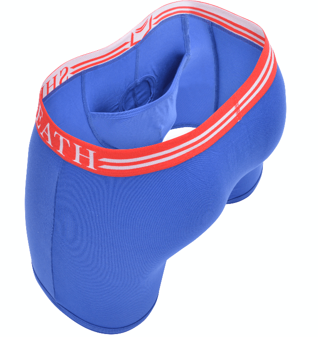
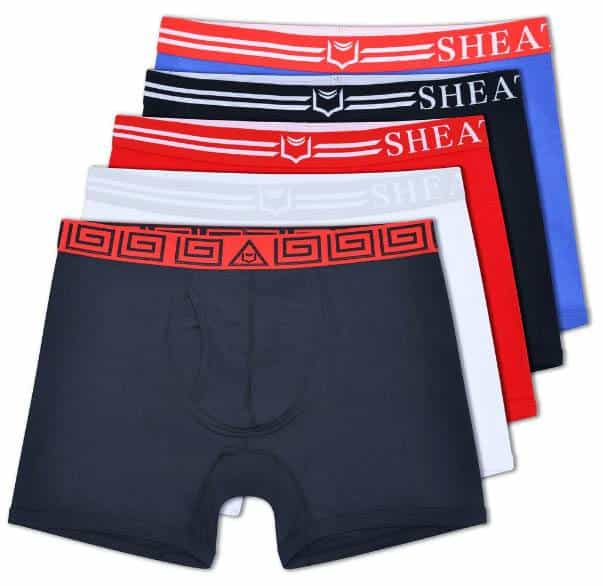

CEO
Former Army Sergeant that Completed 2 tours in Iraq before coming up with the invention of SHEATH Underwear which began the current mission to spread awareness about this new more comfortable design of underwear for men and their packages.


The following article was sponsored by SHEATH Underwear.
The rising temperature tells us that summer has arrived, and with it comes that unmistakable discomfort of a sweaty nether region. It is a predicament we as men are all too familiar with; making your way through the daily grind when, all of a sudden, the boys pass their point of expiry and are now clinging for dear life onto your inner thigh and anything else within their sticky reach.
Nothing can compromise a man’s focus and his calm, cool collectedness quite like a moist chafing and the constant need to readjust. Fortunately, there exists a type of undergarment designed specifically for the purpose of making these sweaty stick-situations a thing of the past. Here are just a few of the ways in which a quality pouch underwear can improve your everyday life.
We have a special discount for ROK readers: use promo code KING to save 30% off your first order. Click here to visit SHEATH Underwear.
First and foremost, the key to combating vexation in the testicular region is isolation. A carefully designed separative pouch will make a world of difference in both physical activity and one’s everyday routine, especially for anyone transitioning from a life of cheap department store multipack underwear.
An important thing to note is that some pouch designs offer different degrees of separation to be considered based on your personal needs. There are the simple yet elegant kangaroo-like pouches that will cradle your package in its entirety, and then there is the dual-pouch design that takes separation to the next level by isolating not just your package, but also the head honcho from his two lackeys.

Perhaps the most crucial component to comfort longevity in the genital region is maintaining a dry habitat for your serpent and danglers. The quality blend of moisture-wicking material goes a long way in preventing unwanted sweat build-up that can lead to chafing, irritation, in-grown hairs and, in serious cases, infection. Pair this with the separative pouch and now we’re talking about a truly miraculous and liberating state of comfort maintained in even the hottest conditions.
With separation and dryness in check, the next concern in choosing the right underwear is fabric breathability. Despite its manly nature, the testicular environment is a delicate one, and with some of the cheap fabrics used in creating men’s underwear, you may as well be sticking your boys inside of a toaster oven. While it may not be immediately apparent, inadequate ventilation for one’s groin area can lead to a world of urological and testicular issues down the road, so lightweight and breathable elasticity is a must.
Comfort and functionality is great and all, but let’s face it – style will make or break the majority of men’s apparel decisions, even when it comes to something as seldom seen as underwear. You never know when you might get caught with your pants off, so best make it a sight to behold with a stylish pair of drawers. Additionally, there is something to be said about a bold designer waistband peeking out above your trousers whenever a shirtless opportunity presents itself.

All things considered, there is only one brand that I feel meets the criteria of a great pouch underwear, a company with the oh-so-fitting name of SHEATH. Developed by a US Army Veteran while he was experiencing the hottest climates Earth has to offer, their underwear is the pinnacle of fashionable, preventative comfort at a reasonable price-point.
From a medical perspective, SHEATH has subjected their pouch design and underwear products to trial and examination by urologist Dr. James Simon, who has given them the seal of approval. What’s more, Dr. Simon has even gone as far as to recommend SHEATH products to patients who require aid in the recovery of genital surgery, as well as men who come to him seeking relief for general discomfort in the genital region.
You may think it strange to be so concerned with a man’s underwear, but comfort, style and health benefits aside, a man’s underwear is his base layer, point of contact and first line of defense in protecting his outerwear from nature’s unpleasantries. Why not do ourselves the favor of utilizing the finest options available to us? Unless of course you are one of those thrill seekers who prefer to go commando, in which case keep doing you.
We have a special discount for ROK readers: use promo code KING to save 30% off your first order. Click here to visit SHEATH Underwear.